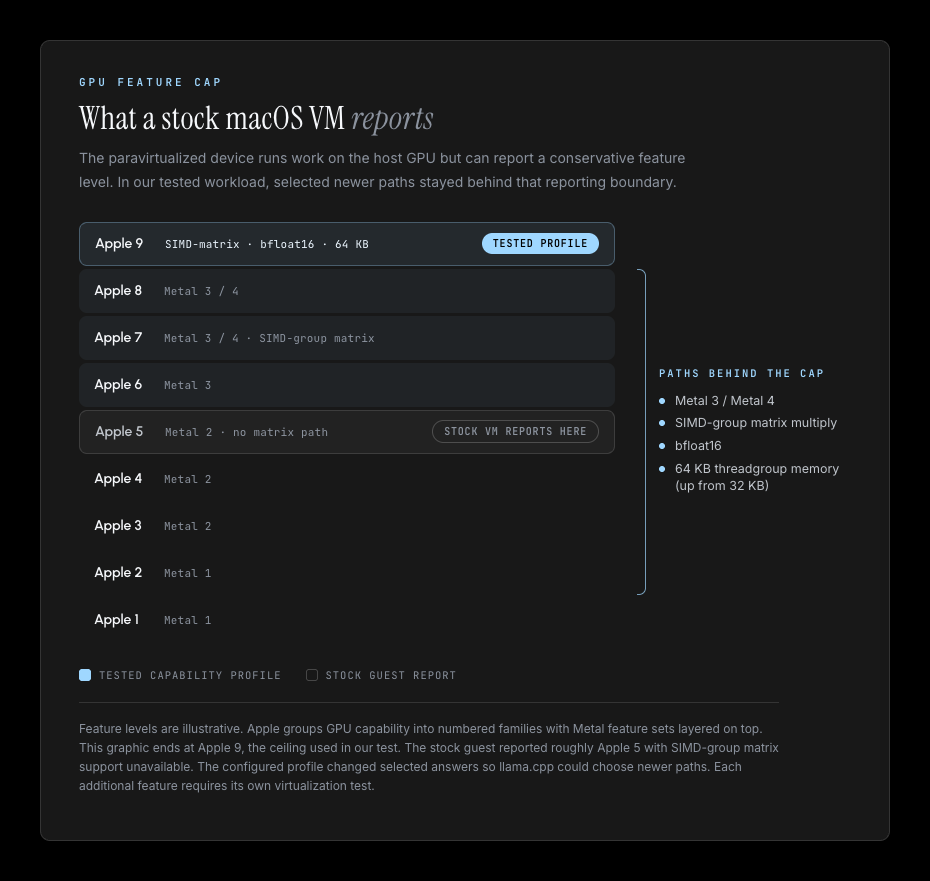

THE FRONT PAGE
EDITOR'S NOTE: As shortcut-driven design continually trades foundational engineering rigor for immediate scale, the quiet work of structural integrity remains an intentional discipline we still have the agency to choose. #Architectural compromises and systemic vulnerabilities in AI API abstractions
BREAKING VECTORS
Cognitive Shortcuts Enter the Lab, Bringing Metabolic Logic to Neural Function
Researchers are exploring interventions aimed at suppressing cognitive friction much like GLP-1 drugs curb appetite, promising immediate efficiency at the likely cost of deep mental endurance. As with the quiet decline of software craft, trading deliberate rigor for frictionless output risks eroding the underlying discipline required for durable problem-solving.
MODEL ARCHITECTURES

Probing Internal States Suggests LLMs Can Track Their Own Accuracy
Researchers analyzing transformer activation patterns found latent representations that correlate with model correctness before output generation, hinting at a mechanism for real-time error detection. While this offers a pathway to curb hallucination, relying on internal confidence scores risks blinding engineers to novel failure modes that slip past statistical self-monitoring.
NEURAL HORIZONS
Multimodal Emotion Classifiers Target the Canine Baseline
A new release attempts to replicate how dogs infer human emotional states across visual and acoustic signals, though swapping embodied biological context for brittle feature weightings remains a clear trade-off. It offers a modest benchmark for cross-modal tracking, even if it underlines how far statistical pattern matching remains from genuine perceptual discipline.
LAB OUTPUTS
Suzanne promises CAD-to-factory automation, testing the limits of physical constraints
By extending generative workflows into physical manufacturing, Suzanne aims to compress the gap between design and production. The risk lies in edge-case physics: automated generative systems frequently produce shapes that look elegant in software but fail standard tooling or load tests.
INFERENCE CORNER

Local Inference Finds an Unlikely Speedup Inside macOS Virtual Machines
Running llama.cpp inside virtualized macOS instances on Apple Silicon yields surprising throughput gains by side-stepping host-level memory scheduling overheads, though hardware virtualization adds an annoying layer of debugging friction when unified memory contention spikes. It is a quiet reminder that modern performance tuning increasingly involves tricking our own hypervisors rather than writing tighter code.
Terminal Multiplexers Multiply as Software Quality Drops Elsewhere
Developers are quietly rebuilding basic terminal infrastructure to regain complete control over local environments, trading convenience for predictable performance as modern software stacks grow increasingly bloated.